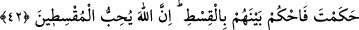
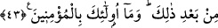

42- Hep yalana kulak verir, durmadan haram yerler. Sana gelirlerse, ister
aralarında hüküm ver, ister onlardan yüz çevir. Eğer onlardan yüz çevirirsen sana
hiçbir zarar veremezler. Ve eğer hüküm verirsen, aralarında adaletle hükmet.
Allah, âdil olanları sever.
“Hep yalana kulak verir,” Burası önceki âyetin bir tekrarıdır. “durmadan haram
yerler.” Yani rüşvet gibi bereketi kaldırılmış haram kazancı yerler. Âyette harama “
” denmesinin sebebi, bereketinin ortadan kaldırılmış olmasındandır. Çünkü bu
kelime bir şeyin kökünü kesmek anlamındadır.
“Sana gelirlerse,” Yani, onların durumu açıklandığı gibi olunca: aralarında meydana
gelen anlaşmazlıklardan dolayı hakemliğine başvurmak üzere sana gelirlerse “ister
aralarında hüküm ver, ister onlardan yüz çevir.” Burası her iki durumda Rasûlullah’ın
muhayyer kılındığının beyanıdır.
“Eğer onlardan yüz çevirirsen sana hiçbir zarar veremezler.” Yani onların hakemlik
yapma tekliflerini reddetmenden dolayı hiçbir şekilde sana bir düşmanlıkta
bulunamazlar. Zîrâ “Allah seni insanlardan koruyacaktır.” (Mâide, 5/67)
“Ve eğer hüküm verirsen, aralarında adaletle hükmet.” Yani recm ile hükmettiğin
gibi emrolunduğun üzere adaletle hüküm ver.
“Allah âdil olanları sever.” Allah adil insanları sever, onları her türlü istenilmeyen
ve sakınılan şeylerden korur ve onların şânını yüceltir. Bir hadis-i şerifte şöyle
buyurulmuştur: “Adaletle davrananlar Allah katında nurdan minberler üzerinde
olacaklardır.”[317]
43- İçinde Allah’ın hükmü bulunan Tevrat yanlarında olduğu halde nasıl seni
hakem kılıyorlar da sonra, bunun arkasından yüz çevirip gidiyorlar? Onlar inanmış
kimseler değildir.
“İçinde Allah’ın hükmü bulunan Tevrat yanlarında olduğu halde nasıl seni hakem
kılıyorlar da” İnandıklarını iddia ettikleri kitaplarında bu hüküm yazılı olduğu halde
kendisine ve kitabına inanmadıkları Rasûlûllah’ı hakem yapmaları şaşılacak şeydir.
Ayrıca Rasûlullah (s.a.)’e hakemlik teklif etmekten kasıtlarının hakkı öğrenmek ve
şerîatı kâim kılmak değil, Allah’ın hükmü olmasa da bu hususta kendileri için daha
kolay olanı talep etmek olduğuna dikkat çekilmiştir.
Burası taaccüb hükmüne dahil “Sonra bunun arkasından” yani senin hükmünden